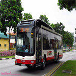

Transportation

Singapore’s Public Bus
Details
There are 2 official bus provider in Singapore, those are SMRT buses and SBS Transit. Both company provide public buses and helping each other to serve complete bus coverage in Singapore. Both public bus provider using the same cost rate, so there is no worry for the consumer / tourist to ride any buses.
Singapore MRT
Details
Singapore has train public transportation called MRT (Mass Rapid Transportation). This train service is provided by SMRT and SBS Transit which are the official company. The train is very fast, cheap and reliable, the government until now still keep upgrading the coverage of the train so it can reach any place within the city. MRT will be the best choice of transportation for tourism who enjoy holiday in Singapore.